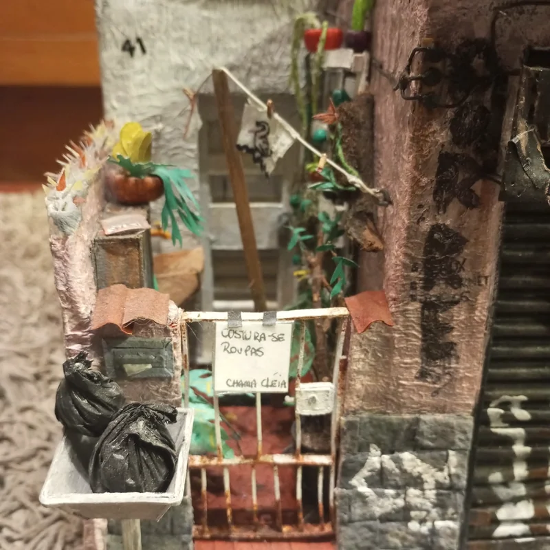
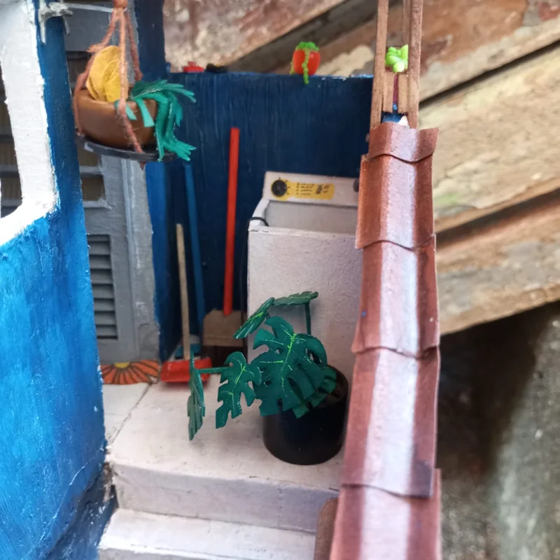
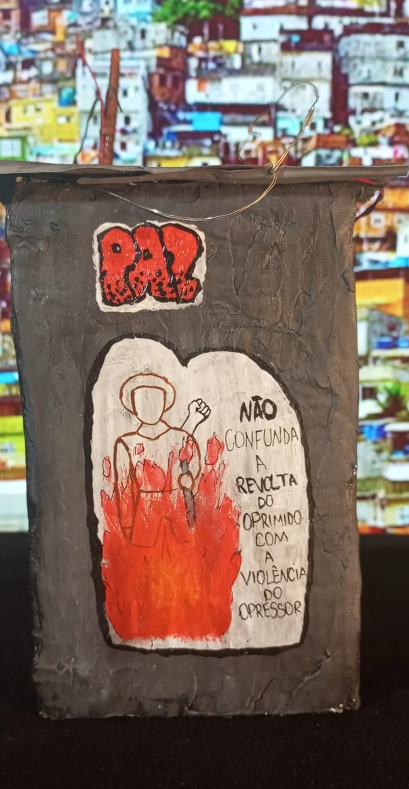

01
Projeto Quebrada
DIORAMAS REALISTAS · FEITOS À MÃO
A vida da quebrada, feita à mão. Um convite para enxergar de novo o que a gente vê todos os dias.
Entre nessa quebrada ↘Pequenas construções. Histórias imensas.
 É no detalhe
É no detalhe01 / OBRAS SELECIONADAS
Chegue mais perto.
Cada cantinho tem o que contar.
Fachadas, fios, varais e marcas do tempo. Cenas do Brasil real, construídas com a atenção que o cotidiano merece.
Projeto Quebrada
Projeto Quebrada
Projeto Quebrada
Diorama · peça única
UM PROJETO. MUITAS HISTÓRIAS.
O Projeto Quebrada reúne peças que se conectam para formar um cenário maior. Cada casa, comércio e calçada leva um pedaço da vida em comunidade.
UM CONVITE PARA DEMORAR O OLHAR
a vida mora aqui.Toque nos pontos e encontre as histórias que cabem em poucos centímetros.
DETALHE 01 / 03
Um aviso escrito à mão revela que a casa também é lugar de trabalho. Uma história inteira em um pequeno papel.
CASA DA DONA CLEIDE · PROJETO QUEBRADA
02 / O OLHAR DO ARTISTA
Samurai Artesão transforma cenas do cotidiano em dioramas que pedem uma pausa.
Seu olhar encontra histórias nas construções das periferias brasileiras: no comércio da esquina, na planta que cabe onde dá, no aviso improvisado, no muro que fala.
As miniaturas aproximam a gente desses lugares. Uma arte sobre memória, pertencimento e a resistência de quem constrói sua história todos os dias.
Samurai ArtesãoO BRASIL REAL, EM CADA DETALHE.


03 / TEMPO DE FAZER
Cada peça apresentada leva cerca de 30 a 40 dias para ficar pronta. É tempo de construir, pintar e compor os detalhes que dão vida a cada cena.
O desgaste na parede também é feito à mão. O pequeno objeto na calçada também tem seu lugar. É assim que uma miniatura se torna um mundo reconhecível.
Acompanhe o processo no YouTube ↗UMA HISTÓRIA TAMBÉM PODE COMEÇAR AQUI.
Para encomendas, interesse nas obras, exposições ou uma boa conversa sobre arte, fale com o Samurai Artesão.
Converse pelo Instagram ↗Peças artesanais e únicas. Consulte a disponibilidade e os prazos de novas encomendas diretamente com o artista.